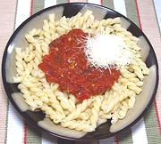

|
Tomato Sauce with Pine NutsItaly - Calabria | ||||
| Serves: Effort: Sched: DoAhead: |
2 main ** 55 min Yes |
Raisins and Pine Nuts in this Clalabrian sauce show Arab influence from nearby Sicily, which was under Arab rule for over 250 years. This is a fine and flavorful vegetarian sauce. | |||
|
|
28 oz 1 1 2 2 1/3 1/4 |
can cl T T T t t |
Tomatoes Garlic Raisins Pine Nuts (1) Olive Oil, ExtV Salt Pepper |
Prep (30 min - 20 min work)
|